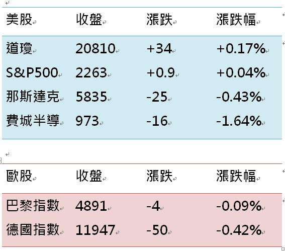

恆生指數再創新高!!!如何正確的看待中港股市?
- 瀏覽人次:273
- 作者:老師三
睽違已久的萬點大關終於到來！
這裡會是決戰的「光明頂」嗎？
這一步....
如同我十五年追求專業精進以及職場歷練的過程....
真是充滿艱辛！
酷暑下的五月天
台股與台指終於萬點熬出頭
如同我之前的文章所敘述
萬點整數絕非頂點
在突破了差點變成盤頭的整理區之後
終於在溫和放量的走勢下
亦步亦趨的守住「萬貫家財」!
今日的當沖走勢
亦幾乎就落在 薩德指標的壓力與支撐內

表示今日的行情步伐
走的即溫和又穩健
對於多頭後勢再探「光明頂」
是趨漲的好現象～
今日市場氛圍
雖見謹慎保守
但市場在緩漲盤堅的趨勢中
除了指標尚未背離現象未解之外
仍然未見敗相
故從技術面推判....
多頭仍有可期待的表現空間～
所以.....
真正決戰關鍵的「光明頂」.....
神秘座標在哪......？
獨家研發
掌握脈動的指標
技巧靈活的策略
才能引領投資人
邁向贏家之路
威力期貨營 分析師 陳威吏
Facebook 粉絲團：請搜尋「威力期貨陳威吏」；
或點選粉絲團網址：https://www.facebook.com/Welly16888/
LINE@：@exw1061t
聚揚證券投顧；台北市松江路315號2樓；洽詢電話(02)2506-8882
延伸閱讀
中華電(2412) 空方舉白旗投降，法人 3 日回補大買 9044 張，主升段已經開始 ?
「搶反彈」快、狠、準！智邦 2 天激賺 56,559 元！05/11 (四) 21:00權證小哥直播
台股清晨的第一杯咖啡(5/16)創高持續上漲觀察金融指數與成交量
北上打拼，第 1 桶金難存？26 歲白領女：簡單 5步抓到中租-KY(5871)，1季大漲 35%！
法說會前夕... 宏達電暴跌 10.5%，雪紅姊的紅茶變「綠茶」？用這張「表格」搶賺 7,400元！
「隔日沖賣壓」來襲拉警報！股價開高走低急跌 2.7% .. 30 分鐘 7,000 元當沖獲利入袋！
影音推薦
空頭不死 多頭不止
郭哲榮17.05.15 15:25
開放盤後交易，萬點之上的穩健獲利發法
翁士峻17.05.15 16:14
散戶越不信 法人越高興
郭哲榮17.05.12 17:48
萬點過後
郭哲榮17.05.11 18:02
睽違17年收盤站上萬點，未來走勢如何?
翁士峻17.05.11 16:46
台積電四月營收來到三年新低，台股在9900之上仍為多方趨勢
翁士峻17.05.10 16:03
-

指標介紹指標介紹指標介紹指標介紹指標介紹指標介紹指標介紹指標介紹指標介紹指標介紹指標介紹
觀看人數：19827 -

指標介紹指標介紹指標介紹指標介紹指標介紹指標介紹指標介紹指標介紹指標介紹指標介紹指標介紹
觀看人數：19827 -

指標介紹指標介紹指標介紹指標介紹指標介紹指標介紹指標介紹指標介紹指標介紹指標介紹指標介紹
觀看人數：19827 -
指標介紹指標介紹指標介紹指標介紹指標介紹指標介紹指標介紹指標介紹指標介紹指標介紹指標介紹
觀看人數：19827 -
指標介紹指標介紹指標介紹指標介紹指標介紹指標介紹指標介紹指標介紹指標介紹指標介紹指標介紹
觀看人數：19827 -
指標介紹指標介紹指標介紹指標介紹指標介紹指標介紹指標介紹指標介紹指標介紹指標介紹指標介紹
觀看人數：19827
- 台股
- 國際
- 期權
- 權證
- 基金
- 外匯
- 房市
- 投資
- 理財
- 職場
- 親子
- 勵志
- 健康
- 隨手分享